🏰 Древняя Лида
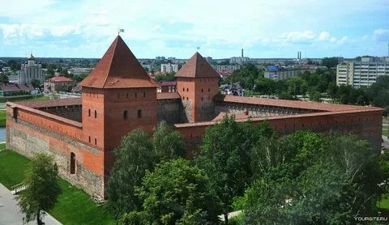
Лида — город с богатой историей, которая бережно хранится и передаётся следующим поколениям. В Лидском историко-художественном музее находится около 55 тысяч артефактов, среди которых особое место занимают старинные фотографии города. Они позволяют увидеть архитектуру Лиды начала XX века и почувствовать атмосферу прошлых эпох.
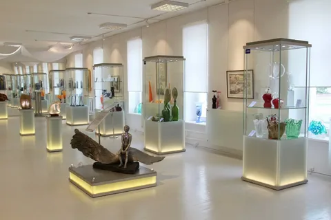
Одной из важнейших страниц истории города является история Рыночной площади. Она была центром городской жизни: здесь проходила торговля, встречались жители города, развивались ремёсла и формировались городские традиции.
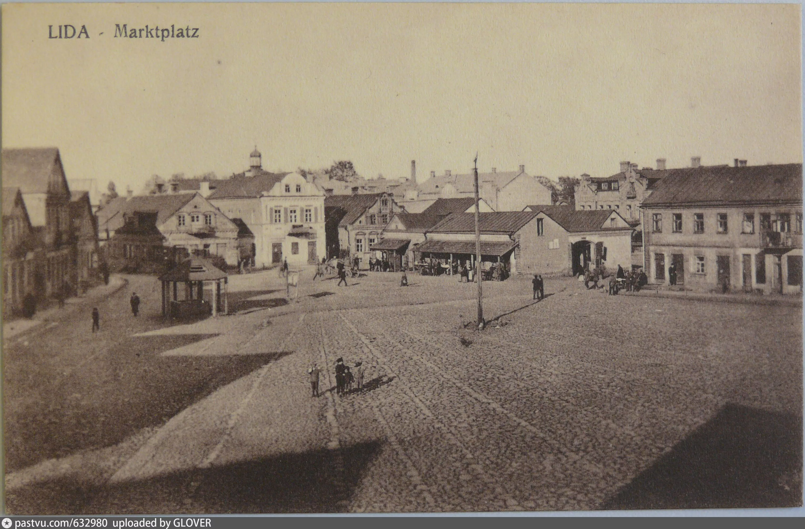
История рынка в Лиде связана ещё со временем строительства замка. В XIV–XV столетиях торговая территория располагалась с северной стороны от замка. В начале XVII века появилась Рыночная площадь, которая находилась в районе современной площади Ленина.
На протяжении веков город менялся: появлялись новые улицы, здания, предприятия. Менялись названия площадей и улиц, но Лида сохраняла своё значение как важный торговый и культурный центр.
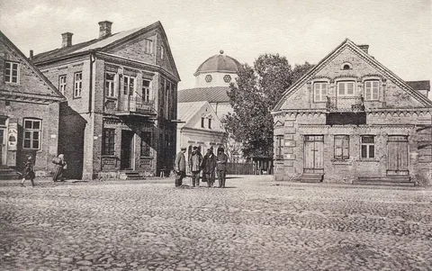
История древней Лиды — это история людей, которые создавали город своим трудом. Сохранившиеся фотографии, документы и архитектурные памятники помогают нам сегодня увидеть, какой была Лида много лет назад.
📸 Лида в прошлом
История Лиды — это не только даты и события, но и повседневная жизнь её жителей. Старинные фотографии позволяют увидеть город таким, каким он был много лет назад: его улицы, площади, здания, торговые ряды и людей.
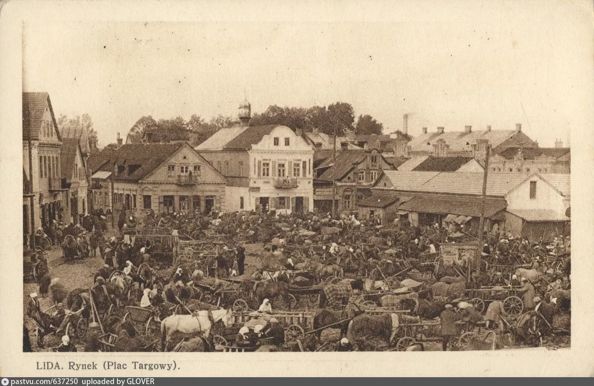
🏪 Рыночная площадь
Особое место в истории города занимала Рыночная площадь. В XIV–XV столетиях рынок располагался с северной стороны Лидского замка, а в начале XVII столетия Рыночная площадь появилась в районе современной площади Ленина.
Здесь кипела торговая жизнь города. На фотографиях можно увидеть яркие сцены уличной торговли, прилавки крестьян и товары, которыми торговали жители. Рынок был не только местом торговли, но и важным центром общения и городской жизни.
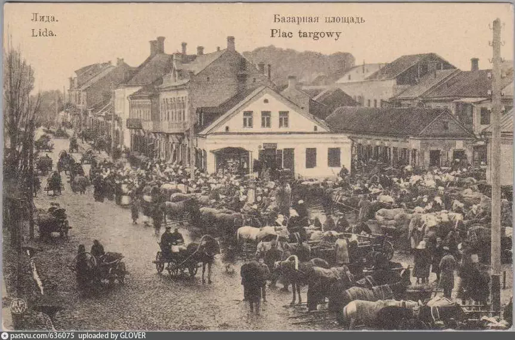
🏘 Старые улицы города
От Рыночной площади в XVII веке отходили три улицы: Виленская, Замковая и Кривая. Виленская вела в сторону Вильнюса, Замковая — к замку и далее на юг, а Кривая соединяла рынок с улицей Каменской.
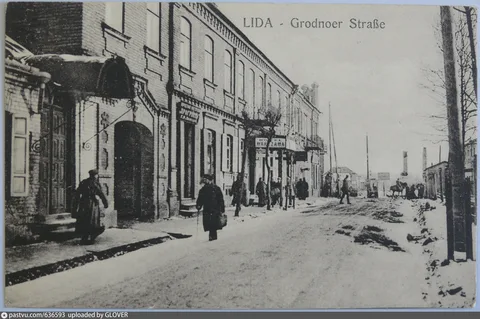
🔥 Пожар 1891 года
Одним из самых тяжёлых событий в истории города стал огромный пожар, произошедший в ночь на 7 октября 1891 года. Огонь уничтожил около трёх пятых Лиды: сгорело около 400 жилых домов и 600 хозяйственных построек. Практически вся центральная часть города оказалась разрушена.
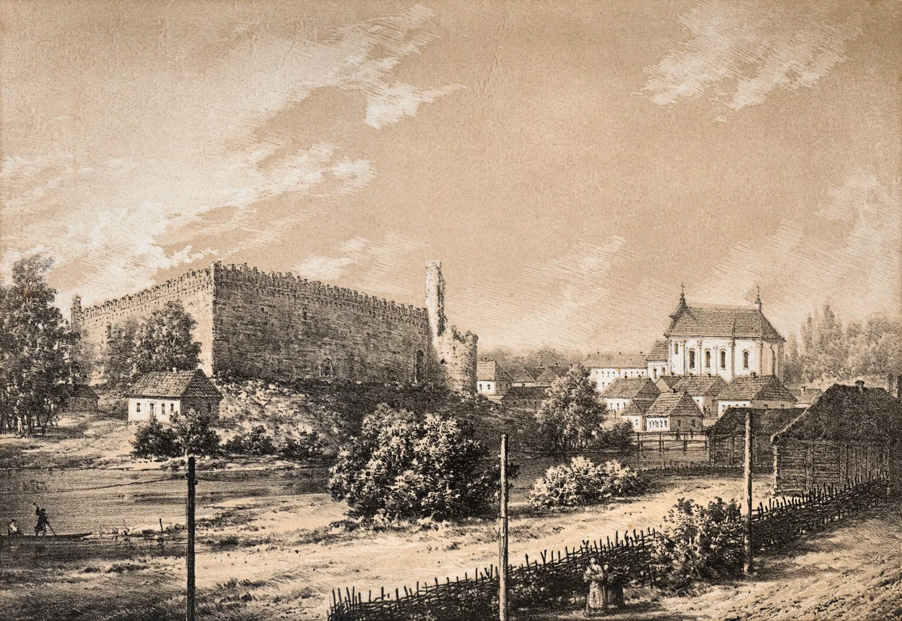
После пожара город начал быстро восстанавливаться. Уже через несколько лет Лида была практически полностью восстановлена, а Рыночная площадь стала застраиваться каменными зданиями.
🏭 Развитие промышленности
В конце XIX — начале XX века Лида переживала быстрый промышленный рост. В городе работали фабрики и заводы, развивались ремесленные мастерские, торговля и различные городские услуги.
В 1897 году в Лиде действовали 18 фабрик и заводов. В начале XX века появились новые предприятия, в том числе литейный завод и механическая лесопилка. К 1914 году в городе насчитывалось множество торгово-промышленных предприятий, магазинов, мастерских и других заведений.
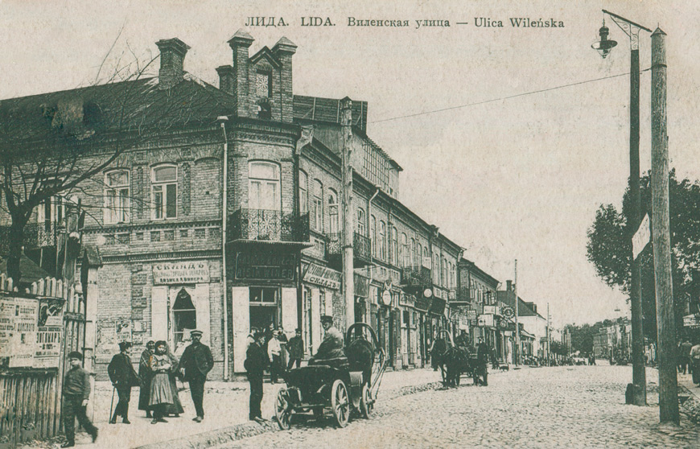
🏙 Рыночная площадь после войны
После войны территория бывшей Рыночной площади изменилась. В 1956–1958 годах здесь велось строительство Дома офицеров. 31 декабря 1958 года перед ним был открыт бронзовый памятник В. И. Ленину, после чего площадь получила название площади Ленина.
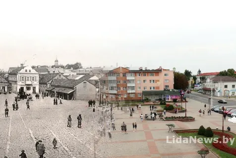
В последующие годы площадь и прилегающая территория продолжали застраиваться. Здесь появились жилые дома, кинотеатр «Октябрь», баня и другие объекты городской инфраструктуры. К концу 1960-х годов площадь приобрела законченный вид.
🏙️ Лида сегодня
Сегодня Лида — это современный город, в котором бережно сохраняется историческое наследие. Прошлое города можно увидеть в архитектуре, памятниках, музейных экспозициях и исторических местах, которые остаются частью современной жизни Лиды.
🏰 Лидский замок
Одним из главных символов современной Лиды остаётся Лидский замок. Сегодня он является важной достопримечательностью города и напоминает о его средневековом прошлом. Замок связывает современную Лиду с её многовековой историей.
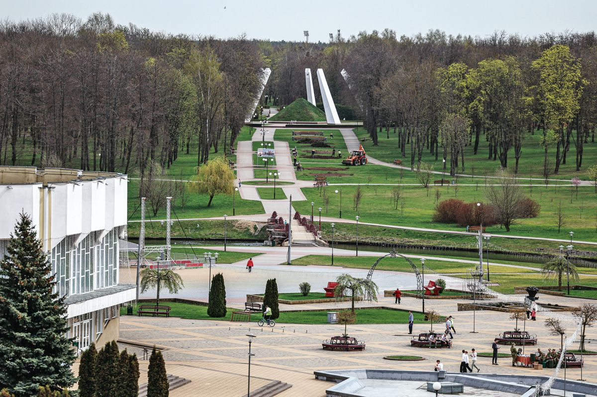
🏙️ Площадь Ленина
Центральная площадь города продолжает оставаться важным общественным пространством. В 2010 году площадь Ленина была реконструирована, а памятник Ленину был перенесён в проход между домами. В здании Дома офицеров стала функционировать Лидская детская школа искусств.
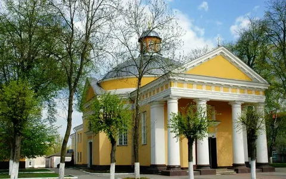
⛪ Архитектура города
Современный облик Лиды складывается из зданий разных эпох. Рядом с современными постройками сохранились исторические здания и архитектурные памятники, которые напоминают о прошлом города.
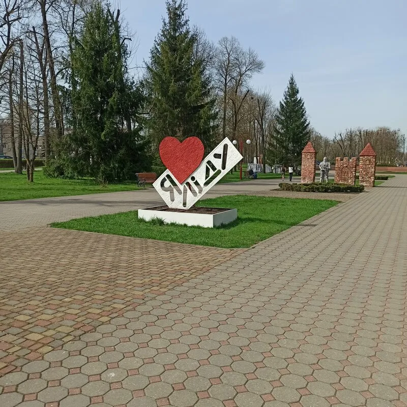
🌳 Современная Лида
Сегодня Лида продолжает развиваться и меняться. Благоустраиваются улицы и общественные пространства, проводятся городские и культурные мероприятия. При этом город сохраняет связь со своим прошлым и продолжает бережно относиться к историческому наследию.
👑 Лида — город с историей
История Лиды продолжается и сегодня. Старинный замок, исторические здания, музей, площади и современные городские пространства вместе создают неповторимый облик города. Лида остаётся городом, в котором прошлое встречается с настоящим.